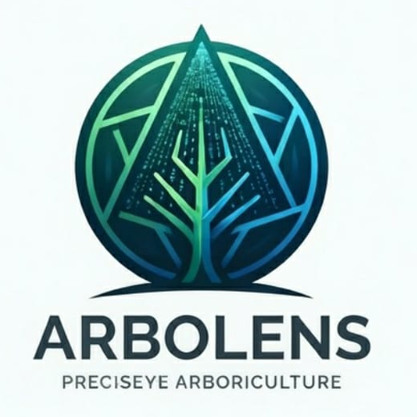
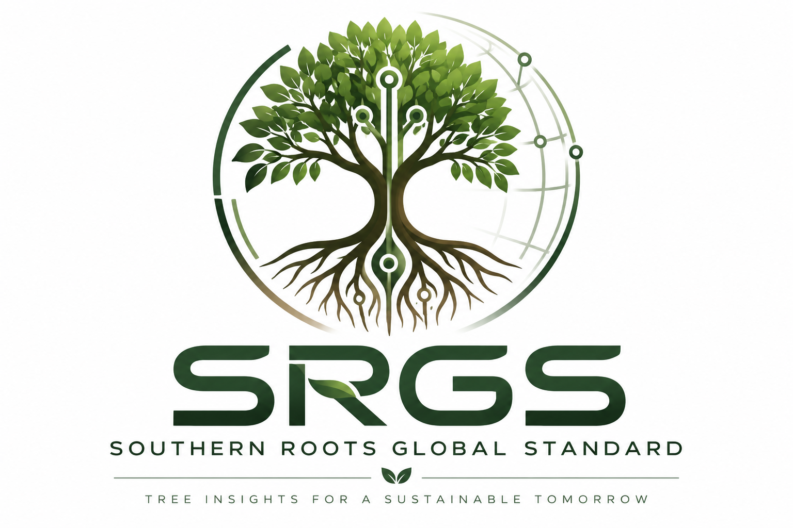

ARBOLENS
Ogni albero monitorato nel tempo, in 3D, per decidere prima che sia tardi.
Scopri di più →// tree insights for a sustainable tomorrow
Conoscere gli alberi nel tempo, per gestire meglio il verde pubblico.

01 — Origine
SRGS nasce da un'amicizia e dalla voglia di sperimentare. Due arboristi conosciuti a livello nazionale e un programmatore si sono chiesti: come possiamo valutare la salute degli alberi con più precisione e meno rischio? E come possiamo aiutare le amministrazioni a gestire il verde pubblico con più chiarezza?
La risposta sono strumenti e software che lavorano insieme:
Analisi affidabili direttamente sotto la pianta.
Una visione completa e aggiornata del proprio patrimonio arboreo.
Informazioni trasparenti.
02 — Ecosistema

Ogni albero monitorato nel tempo, in 3D, per decidere prima che sia tardi.
Scopri di più →Il verde della città, su una mappa aperta a tutti i cittadini.
Scopri di più →Valutazione e report immediati, inviati direttamente sotto la pianta.
Scopri di più →Comuni e imprese del verde in contatto diretto, in modo ordinato e sicuro.
Scopri di più →03 — Mappa del verde pubblico
Una mappa consultabile da qualsiasi cittadino, con tutte le piante di un'area o dell'intero territorio. Dove disponibile, ogni albero ha la sua scheda.
04 — GreenReport · app per arboristi
L'arborista esegue l'analisi direttamente in campo, con il Protocollo Aretè o con un metodo tradizionale, e ottiene subito la valutazione. Il report è pronto sul posto e si invia all'amministrazione o al committente privato.
Più rapidità. Più precisione. Meno rischio.
05 — Piattaforma amministrazione–imprese
Mette in comunicazione diretta il Comune con le aziende che curano il verde sul territorio.
È collegata alla mappa pubblica CITTÀVERDE, che mostra solo alcuni aspetti dei lavori, per tutelare la privacy e mantenere ordinata la gestione delle informazioni.
06 — Monitoraggio 3D con sensori · progetto di punta
Sensori installati sugli alberi e una mappa 3D di tutto il patrimonio arboreo.
Ogni albero ha una scheda con fotografie del Protocollo Aretè e firma del tecnico, e il sensore ne registra gli spostamenti. Scansioni 3D periodiche, sovrapponibili nel tempo, mostrano i movimenti di ogni pianta: così si individuano gli alberi con segni di cedimento e si decidono potature mirate, fino al singolo ramo.
SRGS vuole essere un punto di riferimento per le amministrazioni pubbliche nella gestione del verde.
Scriveteci per una presentazione07 — Contatti
Raccontateci il vostro territorio o il vostro progetto: vi proporremo una presentazione degli strumenti SRGS.